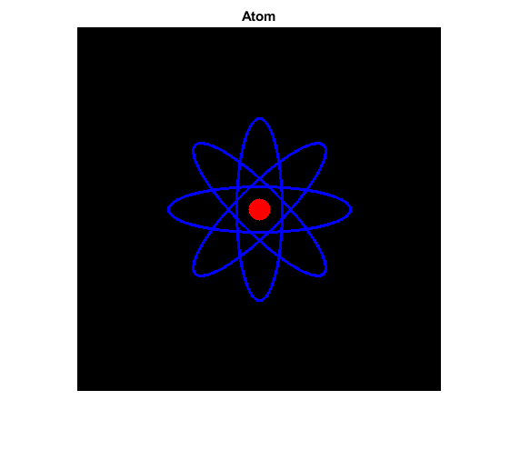
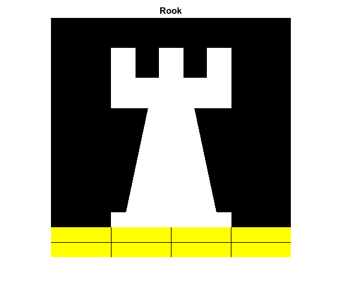

Basic Geometric Drawing
In this demo, we show how to:
- Draw a line by using the function cv.line
- Draw an ellipse by using the function cv.ellipse
- Draw a rectangle by using the function cv.rectangle
- Draw a circle by using the function cv.circle
- Draw a filled polygon by using the function cv.fillPoly
Sources:
Contents
image size
W = 400;
Atom
img1 = zeros(W,W,3,'uint8'); for ang=-45:45:90 img1 = cv.ellipse(img1, [W W]/2, [W/4 W/16], ... 'Angle',ang, 'Color',[0 0 255], 'Thickness',2); end img1 = cv.circle(img1, [W W]/2, W/32, ... 'Color',[255 0 0], 'Thickness','Filled'); figure(1), imshow(img1) title('Atom')
Rook
img2 = zeros(W,W,3,'uint8'); pts = [ W/4 7*W/8 ; 3*W/4 7*W/8 ; 3*W/4 13*W/16 ; 11*W/16 13*W/16 ; 19*W/32 3*W/8 ; 3*W/4 3*W/8 ; 3*W/4 W/8 ; 26*W/40 W/8 ; 26*W/40 W/4 ; 22*W/40 W/4 ; 22*W/40 W/8 ; 18*W/40 W/8 ; 18*W/40 W/4 ; 14*W/40 W/4 ; 14*W/40 W/8 ; W/4 W/8 ; W/4 3*W/8 ; 13*W/32 3*W/8 ; 5*W/16 13*W/16 ; W/4 13*W/16 ; ]; img2 = cv.fillPoly(img2, {pts}, 'Color',[255 255 255]); img2 = cv.rectangle(img2, [0 7*W/8], [W W], ... 'Color',[255 255 0], 'Thickness','Filled'); img2 = cv.line(img2, [0 15*W/16], [W 15*W/16]); img2 = cv.line(img2, [W/4 7*W/8], [W/4 W]); img2 = cv.line(img2, [W/2 7*W/8], [W/2 W]); img2 = cv.line(img2, [3*W/4 7*W/8], [3*W/4 W]); figure(2), imshow(img2) title('Rook')